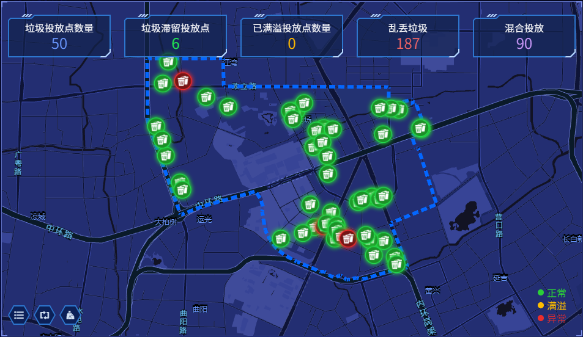
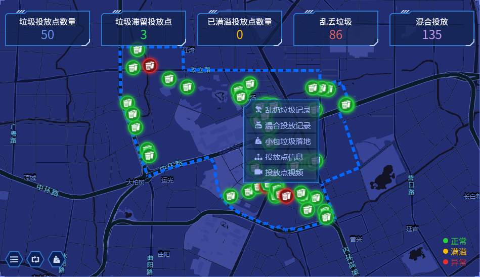
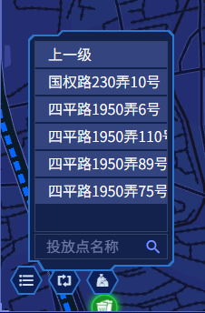
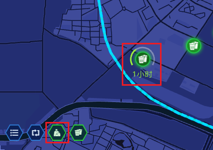

支持 5.0 及以上
平台访问地址:
默认地址：http://garbage01.51hws.com/
输入用户名和密码，登陆系统。
点击进入生活垃圾分类监管平台主页；
1.行政区划列表
2.乱扔垃圾/混合投放排名
3.小包垃圾处置排名
4.地图
5.今日乱扔垃圾图表
6.今日混合投放图表
7.设备运行状态图表
8.垃圾滞留时长排名
9.垃圾滞留任务处置
用来选择行政级别，在区级行政下选择街道，在街道行政下选择居委，以五角场街道为例，下属32个居委会，通过下拉或滑动查看
点击国顺居委会，会显示该居委信息，地图也会自动定位到此居委相应的区域
如果行政区划为区级，显示效果如下
总图表--通过选择具体时间和行政区查询日报表/周报表或月报表，并导出列表。
细分图表--以折线图或柱状图的方式展示区划内投放点的乱扔垃圾。
数据比较--以图表形式比对多个行政区划的乱丢垃圾数量。
右上方功能栏，可以精确查询，切换信息的列表和图标，打开查询条件扩展栏
扩展插件的条件有开始时间，结束时间，行政区，投放点和摄像机，以便更快速的查询。
选择开始时间和结束时间
选择行政区
选择投放点
选择摄像机
切换成总图表的实图
其中功能栏可以选择日期，行政区进行精确查询，并导出数据
导出内容
导出CSV
图表展示该街道下处理小包垃圾处置达标率排名：
点击行政区以查看达标处置率事件记录，可以查看小包垃圾处置的达标率，平均落地时长，最大落地时长，总落地时长，乱丢垃圾
下方的时间轴图表可以查看落地时间，无落地时间，投放时间段以及落地时间段的视频
地图上显示相应行政区划的位置信息及范围，地图上方显示垃圾投放点的数量，垃圾滞留投放点的数量，乱丢垃圾的数量和混合投放垃圾的数量。
左下方功能区从左至右依次为区域菜单栏，投放点巡检，小包垃圾滞留时长
右下方为投放点状态示例，分别是正常状态，满溢状态和异常状态。

点击垃圾投放点数量的图标
显示投放点的图片，名称，街道，居委会，状态和定位
点击图片，显示图片详情，点击红色框内的图标，可以下载图片和预览视频
预览视频页
投放点定位，点击后自动在地图上显示对应的投放点
定位图
小包垃圾处置信息页，显示小包垃圾的点位名称，居委会，日期
包括处置的达标率，平均落地时长，最大落地时长，总落地时长，以及乱丢垃圾的数量
小包垃圾处置点位选择

小包垃圾处置日期选择
小包垃圾处置图表
单击进入垃圾房状态页
点击图标显示乱扔垃圾事件，乱扔垃圾图表和乱扔垃圾分析
右侧的功能栏可以实现查询，记录的平铺显示或图标显示以及添加查询条件。
事件以图标显示的状态
添加查询条件，可参考查询扩展栏：2.2.3
单机图标后，显示混合投放事件
红色图标为 异常状态；
橙色图标为 满溢状态；
绿色图标为 正常状态；
右键点击图表，弹出乱扔垃圾记录，混乱投放记录，小包垃圾落地，投放点信息，投放点视频的操作

乱扔垃圾记录截图，参考乱丢垃圾：2.4.3
混合投放记录截图，参考混合投放：2.4.4
小包垃圾垃圾落地截图：2.3
投放点信息显示投放点名称，街道名称，居委会名称，投放点地址，投放点评分并可以查看垃圾滞留投放点信息，乱丢垃圾事件记录，混合投放事件记录。
投放点视频，参考视频操作：2.4.6
双击图标，显示厢房下的摄像机
放大看视频
摄像机名称
预览和回放按钮
点击切换成回放模式
日期选项
选择开始时间
选择结束时间
点击开始回放
下载视频

视频下方进度条
从左至右依次为，开始暂停键，慢放，快进，单帧进，退30秒，进30秒，时间进度条，音量，目标，截图，全频。
地图上行政区划区域菜单栏/投放点巡检/小包垃圾滞留时长
点开区域菜单栏，查看垃圾厢房，尾部有搜索功能

投放巡检点
单击投放巡检点，出现视频框
投放点名称
点击30S按钮，出现下拉菜单，切换60S/90S，可以让投放点每隔30S/60S/90S自动翻页，
此三个功能键分别是刷新页面/全频/关闭
分页视频的暂停/全屏按钮
分页视频的全频状态，可暂停/取消全屏
查看乱扔垃圾/混合投放/垃圾桶状态
垃圾桶异常状态
后退/播放（暂停）/前进按钮
当前页/总页数
单击小包垃圾滞留时长，会显示小包垃圾滞留的点位和时长，如下图：

切换只显示小包滞留点位
图表显示当日时间段内乱丢垃圾的数量
图表显示当日各个时间段内混合投放的垃圾数量
此图显示对应行政区划内系统设备在线比，全部设备数量，在线设备数量和离线设备数量，并且可以点击查看详细信息
单击全部设备数量图标
显示设备列表
单击在线设备数量图标

显示设备列表
单击离线设备数量图标
显示设备列表
查看对应区划内的垃圾滞留时长排名或垃圾滞留数量排名，并且可以查看行政区划下滞留垃圾的详细信息
点击四平居委会，进入详情页，查看四平居委会下滞留垃圾的图片，投放点名称，街道名称，居委会名称，垃圾堆数，滞留事件，总滞留时长和人员信息。
垃圾滞留数量排名
点击区划查看垃圾滞留投放点的图片，投放点名称，街道名称，居委会名称，垃圾堆数，滞留时间，总滞留时长和人员信息。
点击图片查看大图，并可下载图片
下图显示对应区划的垃圾处置情况，处置率的百分比，全部任务，未完成任务，超时处置的数量，并会自动刷新下属区划的数据信息
点击全部任务，显示该行政区划下的垃圾滞留的事件
图片显示事件的图片，投放点名称，街道名称，居委会名称，落地时间，处置时间，处置员信息，状态以及操作。
右上角的功能区可输入关键字进行精确查询，详细操作可参照右下角功能区可以翻页和跳转至所需事件页。
具体操作参考：2.2.3
点击未完成任务，查看相应的视频
点击视频按钮，播放视频，可查看30s的对应视频
点击超时处置，查看对应信息